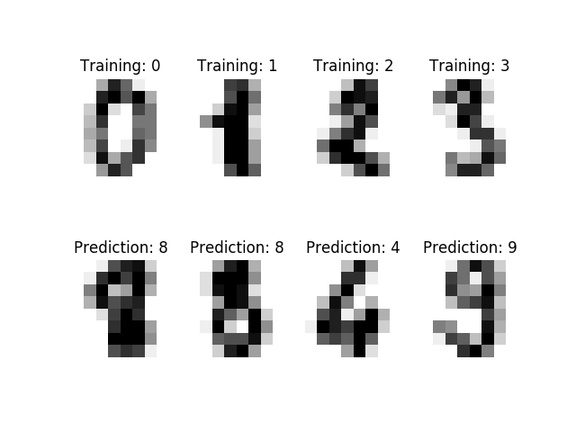

Note
Click here to download the full example code or run this example in your browser via Binder
Recognizing hand-written digits¶
An example showing how the scikit-learn can be used to recognize images of hand-written digits.
This example is commented in the tutorial section of the user manual.
Out:
Classification report for classifier SVC(gamma=0.001):
precision recall f1-score support
0 1.00 0.99 0.99 88
1 0.99 0.97 0.98 91
2 0.99 0.99 0.99 86
3 0.98 0.87 0.92 91
4 0.99 0.96 0.97 92
5 0.95 0.97 0.96 91
6 0.99 0.99 0.99 91
7 0.96 0.99 0.97 89
8 0.94 1.00 0.97 88
9 0.93 0.98 0.95 92
accuracy 0.97 899
macro avg 0.97 0.97 0.97 899
weighted avg 0.97 0.97 0.97 899
Confusion matrix:
[[87 0 0 0 1 0 0 0 0 0]
[ 0 88 1 0 0 0 0 0 1 1]
[ 0 0 85 1 0 0 0 0 0 0]
[ 0 0 0 79 0 3 0 4 5 0]
[ 0 0 0 0 88 0 0 0 0 4]
[ 0 0 0 0 0 88 1 0 0 2]
[ 0 1 0 0 0 0 90 0 0 0]
[ 0 0 0 0 0 1 0 88 0 0]
[ 0 0 0 0 0 0 0 0 88 0]
[ 0 0 0 1 0 1 0 0 0 90]]
print(__doc__)
# Author: Gael Varoquaux <gael dot varoquaux at normalesup dot org>
# License: BSD 3 clause
# Standard scientific Python imports
import matplotlib.pyplot as plt
# Import datasets, classifiers and performance metrics
from sklearn import datasets, svm, metrics
# The digits dataset
digits = datasets.load_digits()
# The data that we are interested in is made of 8x8 images of digits, let's
# have a look at the first 4 images, stored in the `images` attribute of the
# dataset. If we were working from image files, we could load them using
# matplotlib.pyplot.imread. Note that each image must have the same size. For these
# images, we know which digit they represent: it is given in the 'target' of
# the dataset.
images_and_labels = list(zip(digits.images, digits.target))
for index, (image, label) in enumerate(images_and_labels[:4]):
plt.subplot(2, 4, index + 1)
plt.axis('off')
plt.imshow(image, cmap=plt.cm.gray_r, interpolation='nearest')
plt.title('Training: %i' % label)
# To apply a classifier on this data, we need to flatten the image, to
# turn the data in a (samples, feature) matrix:
n_samples = len(digits.images)
data = digits.images.reshape((n_samples, -1))
# Create a classifier: a support vector classifier
classifier = svm.SVC(gamma=0.001)
# We learn the digits on the first half of the digits
classifier.fit(data[:n_samples // 2], digits.target[:n_samples // 2])
# Now predict the value of the digit on the second half:
expected = digits.target[n_samples // 2:]
predicted = classifier.predict(data[n_samples // 2:])
print("Classification report for classifier %s:\n%s\n"
% (classifier, metrics.classification_report(expected, predicted)))
print("Confusion matrix:\n%s" % metrics.confusion_matrix(expected, predicted))
images_and_predictions = list(zip(digits.images[n_samples // 2:], predicted))
for index, (image, prediction) in enumerate(images_and_predictions[:4]):
plt.subplot(2, 4, index + 5)
plt.axis('off')
plt.imshow(image, cmap=plt.cm.gray_r, interpolation='nearest')
plt.title('Prediction: %i' % prediction)
plt.show()
Total running time of the script: ( 0 minutes 0.329 seconds)